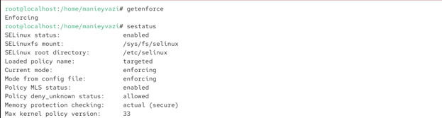
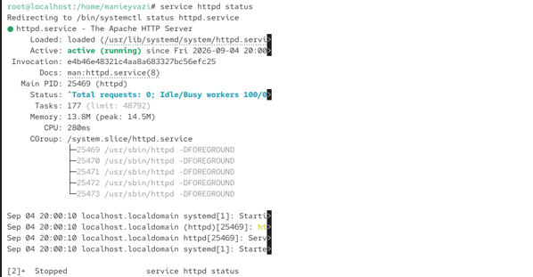
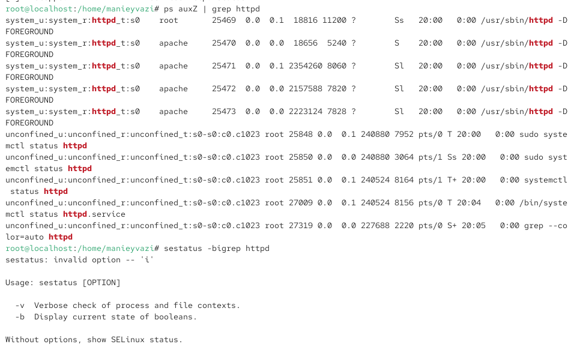
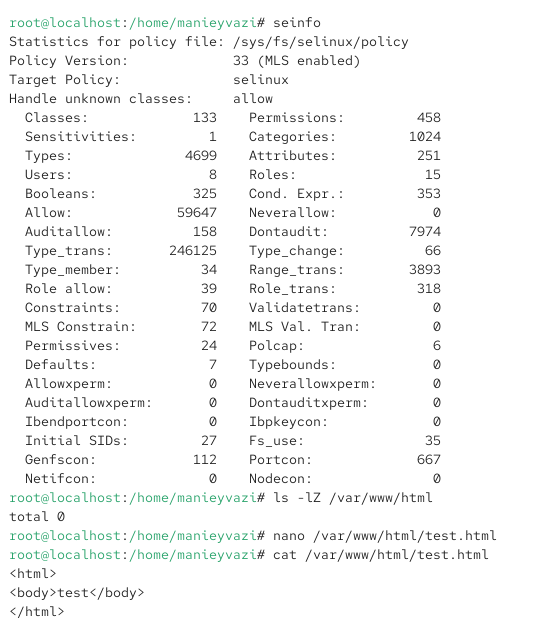
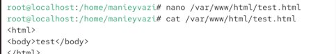
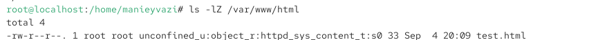
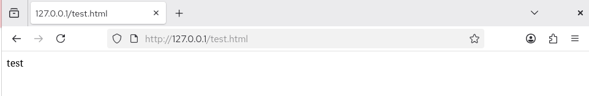
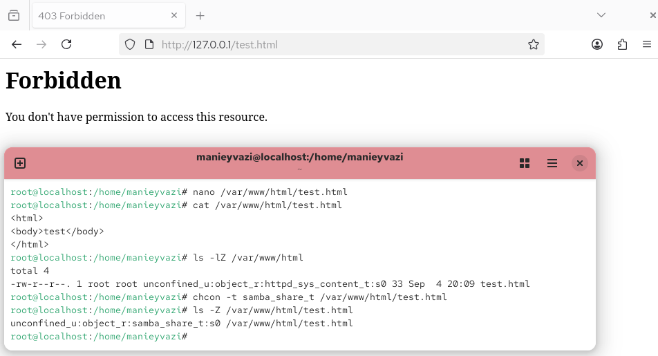

7.октябрь.2026
SELinux: администрирование и взаимодействие с веб-сервером Apache
Развить навыки администрирования ОС Linux. Получить первое практическое знакомство с технологией SELinux. Проверить работу SELinux на практике совместно с веб-сервером Apache.
Действие: Войти в систему и убедиться, что SELinux работает в режиме enforcing с политикой targeted.

Рис. 2
Убедиться, что Apache запущен. Если нет — запустить.

Рис. 3
Действие: Найти веб-сервер Apache в списке процессов и определить его контекст безопасности.

Рис. 4
Посмотреть состояние переключателей SELinux для Apache.
Рис. 4 — Большинство переключателей находятся в положении off.
Посмотреть статистику по политике с помощью seinfo.

Рис. 5 — seinfo выводит общую статистику: количество пользователей, ролей, типов, классов, правил.
seinfo -u — список пользователей SELinux. seinfo -r — список ролей. seinfo -t — список типов.
Определить тип файлов в /var/www/html.
Рис. 5
Действие: От имени суперпользователя создать HTML-файл /var/www/html/test.html.

Рис. 5 — файл создан!
Проверить контекст, присваиваемый по умолчанию вновь созданным файлам.

Рис. 7 — Контекст по умолчанию:
Открыть в браузере адрес http://127.0.0.1/test.html.

Рис. 8 — Тип httpd_sys_content_t позволяет процессу httpd получить доступ к файлу.
Изменить контекст файла test.html на samba_share_t. Команда:

Рис. 9
Открыть в браузере http://127.0.0.1/test.html.
Рис. 9 — Тип samba_share_t не разрешает процессу httpd доступ к файлу. SELinux блокирует доступ, несмотря на то, что права доступа позволяют читать файл любому пользователю.
Действие: Проанализировать, почему файл не был отображён, и просмотреть логи.

Рис. 10 — Проблема не в стандартных правах доступа, а в политике SELinux. Процесс httpd не имеет разрешения на чтение файлов с типом samba_share_t.
Действие: Изменить конфигурационный файл Apache для прослушивания порта 81.

Рис. 11 — SELinux запрещает Apache прослушивать порт 81, так как этот порт не привязан к типу http_port_t.
Действие: Просмотреть лог-файлы.

Рис. 12 — В /var/log/messages и /var/log/audit/audit.log появляются записи об отказе SELinux в привязке к порту 81. В /var/log/httpd/error_log — сообщение о невозможности привязки к порту.
Разрешить Apache прослушивать порт 81. Команда:

Рис. 13 — Порт 81 добавлен в список портов, разрешённых для типа http_port_t.
Перезапустить Apache.

Рис. 14 — Теперь SELinux разрешает Apache прослушивать порт 81.
Действие: Вернуть контекст httpd_sys_content_t файлу test.html.
Рис.
14
Действие: Удалить привязку http_port_t к порту 81.
 Рис. 15 —
Порт 81 удалён из списка.
Рис. 15 —
Порт 81 удалён из списка.
Действие: Удалить файл /var/www/html/test.html.
Рис. 15 —
Файл удалён.
□ Титульный лист
□ Цель работы
□ Описание процесса выполнения с командами и снимками экрана
□ Выводы, согласованные с целью работы
В ходе лабораторной работы я:
получены практические навыки администрирования SELinux и взаимодействия с веб-сервером Apache.
bash
# Проверка SELinux
getenforce
sestatus
# Проверка Apache
service httpd status
service httpd start
# Контекст Apache
ps auxZ | grep httpd
ps -eZ | grep httpd
# Переключатели SELinux
sestatus -bigrep httpd
# Статистика политики
seinfo
seinfo -u
seinfo -r
seinfo -t
# Типы файлов
ls -lZ /var/www
ls -lZ /var/www/html
# Создание файла
su -
cat > /var/www/html/test.html << ‘EOF’
testEOF
# Проверка контекста
ls -Z /var/www/html/test.html
# Изменение контекста
chcon -t samba_share_t /var/www/html/test.html
ls -Z /var/www/html/test.html
# Анализ логов
tail /var/log/messages
tail -n 50 /var/log/httpd/error_log
tail -n 50 /var/log/audit/audit.log
# Изменение порта
vi /etc/httpd/conf/httpd.conf
# Listen 80 -> Listen 81
service httpd restart
# Настройка SELinux для порта
semanage port -a -t http_port_t -p tcp 81
semanage port -l | grep http_port_t
# Возврат контекста
chcon -t httpd_sys_content_t /var/www/html/test.html
# Возврат конфигурации
vi /etc/httpd/conf/httpd.conf
# Listen 81 -> Listen 80
service httpd restart
# Удаление привязки порта
semanage port -d -t http_port_t -p tcp 81
semanage port -l | grep http_port_t
# Удаление файла
rm /var/www/html/test.html